为什么要有代码管理
小明笨笨志强
因为开发过程中有很多人分工合作 大家都要修改代码 而且代码修改后 可能还要还原回去 不一定每一次修改都是正确的,再加上不同时间要发布不同的版本 所以代码必须进行管理要不全乱了。
代码管理的好处
- 多人协作
- 历史版本回溯
- 多份备份
- 进度配合和管理
- 程序员必备技能
git诞生
1991年Linux诞生，从此，Linux系统不断发展，已经成为最大的服务器系统软件了。
Linus虽然创建了Linux，但Linux的壮大是靠全世界热心的志愿者参与的，这么多人在世界各地为Linux编写代码，那Linux的代码是如何管理的呢？
事实是，在2002年以前，世界各地的志愿者把源代码文件通过diff的方式发给Linus，然后由Linus本人通过手工方式合并代码！
Linus Torvalds 在 2002 年起，使用 BitMover 的版本控制软件 BitKeeper 管理 Linux 核心开发，而因为 BitKeeper 除商业付费版本，仅提供可免费使用但不允许修改重新编译的精简版本，引起了开源社区的不满，如自由软件之父 Richard stallman 也敢严厉批评 Linux Torvalds 使用非自由软件开发 Linux 核心。
在 2005 年，Samba 档案服务器开发人 Andrew Tridgell 写了连接 BitKeeper 存储库的简单程序，被 BitMover 创办人 Larry McVoy 指控对 BitKeeper 进行逆向工程，因为决定停止 BitKeeper 对 Linux 的支持。
顿时 Linux 核心开发受到了严峻的挑战，而 Linus Torvalds 秉承自己的版本自己写的精神，整个周末都不见人影，隔周却如变戏法般带着 Git 出现。
git和svn对比
1.git是分布式的，SVN不是 2.git把内容按元数据方式存储，而SVN是按文件 3.git分支和SVN的分支不同 4.git的内容完整性要优于SVN
git原理
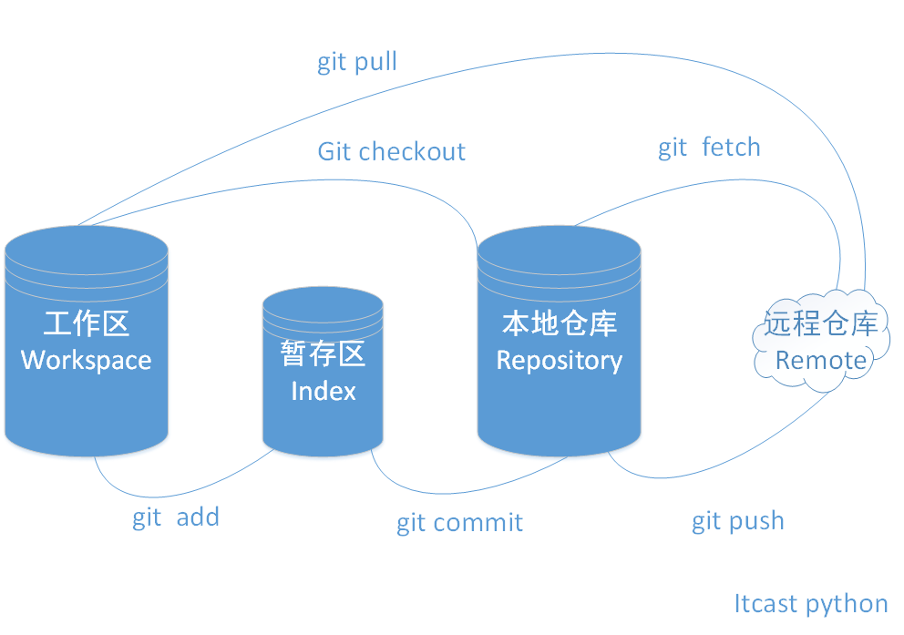
git命令大全
新建代码仓库
# 在当前目录新建一个Git代码库
$ git init
# 新建一个目录，将其初始化为Git代码库
$ git init [project-name]
# 下载一个项目和它的整个代码历史
$ git clone [url]
配置
Git的设置文件为.gitconfig，它可以在用户主目录下（全局配置），也可以在项目目录下（项目配置）。
# 显示当前的Git配置
$ git config --list
# 编辑Git配置文件
$ git config -e [--global]
# 设置提交代码时的用户信息
$ git config [--global] user.name "[name]"
$ git config [--global] user.email "[email address]"
增加/删除文件
# 添加指定文件到暂存区
$ git add [file1] [file2] ...
# 添加指定目录到暂存区，包括子目录
$ git add [dir]
# 添加当前目录的所有文件到暂存区
$ git add .
# 删除工作区文件，并且将这次删除放入暂存区
$ git rm [file1] [file2] ...
# 改名文件，并且将这个改名放入暂存区
$ git mv [file-original] [file-renamed]
代码提交
# 提交暂存区到仓库区
$ git commit -m [message]
# 提交暂存区的指定文件到仓库区
$ git commit [file1] [file2] ... -m [message]
# 提交工作区自上次commit之后的变化，直接到仓库区
$ git commit -a
# 使用一次新的commit，替代上一次提交
# 如果代码没有任何新变化，则用来改写上一次commit的提交信息
$ git commit --amend -m [message]
# 重做上一次commit，并包括指定文件的新变化
$ git commit --amend [file1] [file2] ...
分支
# 列出所有本地分支
$ git branch
# 列出所有远程分支
$ git branch -r
# 列出所有本地分支和远程分支
$ git branch -a
# 新建一个分支，但依然停留在当前分支
$ git branch [branch-name]
# 新建一个分支，并切换到该分支
$ git checkout -b [branch]
# 新建一个分支，指向指定commit
$ git branch [branch] [commit]
# 新建一个远程分支，本地新建然后推送
$ git push origin [branch]
# 新建一个分支，与指定的远程分支建立追踪关系
$ git branch --track [branch] [remote-branch]
# 切换到指定分支，并更新工作区
$ git checkout [branch-name]
# 切换到上一个分支
$ git checkout -
# 建立追踪关系，设置当前分支与指定的远程分支之间关联
$ git branch --set-upstream-to [remote-branch]
# 合并指定分支到当前分支
$ git merge [branch]
# 选择一个commit，合并进当前分支
$ git cherry-pick [commit]
# 删除分支
$ git branch -d [branch-name]
# 删除远程分支
$ git push origin --delete [branch-name]
$ git branch -dr [remote/branch]
标签
# 列出所有tag
$ git tag
# 新建一个tag在当前commit
$ git tag [tag]
# 新建一个tag在指定commit
$ git tag [tag] [commit]
# 删除本地tag
$ git tag -d [tag]
# 删除远程tag
$ git push origin :refs/tags/[tagName]
# 查看tag信息
$ git show [tag]
# 提交指定tag
$ git push [remote] [tag]
# 提交所有tag
$ git push [remote] --tags
# 新建一个分支，指向某个tag
$ git checkout -b [branch] [tag]
查看信息
# 显示有变更的文件
$ git status
# 显示当前分支的版本历史
$ git log
# 显示commit历史，以及每次commit发生变更的文件
$ git log --stat
# 搜索提交历史，根据关键词
$ git log -S [keyword]
# 显示某个commit之后的所有变动，每个commit占据一行
$ git log [tag] HEAD --pretty=format:%s
# 显示某个commit之后的所有变动，其"提交说明"必须符合搜索条件
$ git log [tag] HEAD --grep feature
# 显示某个文件的版本历史，包括文件改名
$ git log --follow [file]
$ git whatchanged [file]
# 显示指定文件相关的每一次diff
$ git log -p [file]
# 显示过去5次提交
$ git log -5 --pretty --oneline
# 显示所有提交过的用户，按提交次数排序
$ git shortlog -sn
# 显示指定文件是什么人在什么时间修改过
$ git blame [file]
# 显示暂存区和工作区的差异
$ git diff
# 显示暂存区和上一个commit的差异
$ git diff --cached [file]
# 显示工作区与当前分支最新commit之间的差异
$ git diff HEAD
# 显示两次提交之间的差异
$ git diff [first-branch]...[second-branch]
# 显示某次提交的元数据和内容变化
$ git show [commit]
# 显示某次提交发生变化的文件
$ git show --name-only [commit]
# 显示某次提交时，某个文件的内容
$ git show [commit]:[filename]
# 显示当前分支的最近几次提交
$ git reflog
远程同步
# 下载远程仓库的所有变动
$ git fetch [remote]
# 显示所有远程仓库
$ git remote -v
# 显示某个远程仓库的信息
$ git remote show [remote]
# 增加一个新的远程仓库，并命名
$ git remote add [shortname] [url]
# 取回远程仓库的变化，并与本地分支合并
$ git pull [remote] [branch]
# 上传本地指定分支到远程仓库
$ git push [remote] [branch]
# 强行推送当前分支到远程仓库，即使有冲突
$ git push [remote] --force
# 推送所有分支到远程仓库
$ git push [remote] --all
撤销
# 恢复暂存区的指定文件到工作区
$ git checkout [file]
# 恢复某个commit的指定文件到暂存区和工作区
$ git checkout [commit] [file]
# 恢复暂存区的所有文件到工作区
$ git checkout .
# 重置暂存区的指定文件，与上一次commit保持一致，但工作区不变
$ git reset [file]
# 重置暂存区与工作区，与上一次commit保持一致
$ git reset --hard
# 重置当前分支的指针为指定commit，同时重置暂存区，但工作区不变
$ git reset [commit]
# 重置当前分支的HEAD为指定commit，同时重置暂存区和工作区，与指定commit一致
$ git reset --hard [commit]
# 重置当前HEAD为指定commit，但保持暂存区和工作区不变
$ git reset --keep [commit]
# 新建一个commit，用来撤销指定commit
# 后者的所有变化都将被前者抵消，并且应用到当前分支
$ git revert [commit]
# 暂时将未提交的变化移除，稍后再移入
$ git stash
$ git stash pop
其他
# 生成一个可供发布的压缩包
$ git archive
# 删除项目的git管理
$ rm .git
github
GitHub于2008年上线，目前，除了Git代码仓库托管及基本的Web管理界面以外，还提供了订阅、讨论组、文本渲染、在线文件编辑器、协作图谱（报表）、代码片段分享（Gist）等功能。正因为这些功能所提供的便利，又经过长期的积累，GitHub的用户活跃度很高，在开源世界里享有深远的声望，形成了所谓的社交化编程文化（Social Coding）。
GitHub允许你免费创建不限数量的“公开”代码仓库，虽有总的资源限额，但一般情况下够用。如果不想公开代码，或者你的代码占用存储空间比较多，你也可以选择成为付费的会员。在GitHub，想要接触高水平的软件项目，了解最前沿的技术趋势，和上微博一样简单。
Github 在代码托管领域是先行者，现在强力的竞争对手也有不少，包括 Gitlab（局域网部署）、Bitbucket（免费账号不限 private 项目个数）、GitCafe（对国内开发者来说可能有墙内优势）。
注册
登陆github网站
https://github.com
创建一个项目
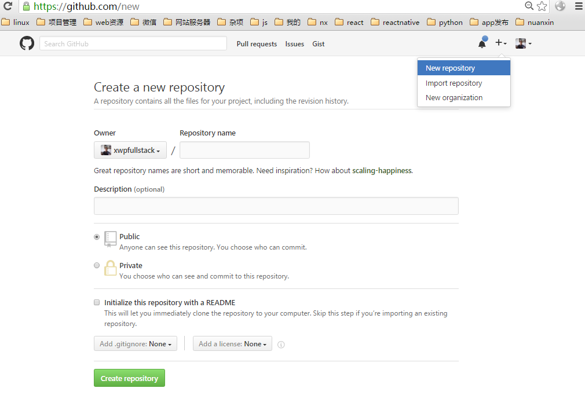
- 创建一个python项目
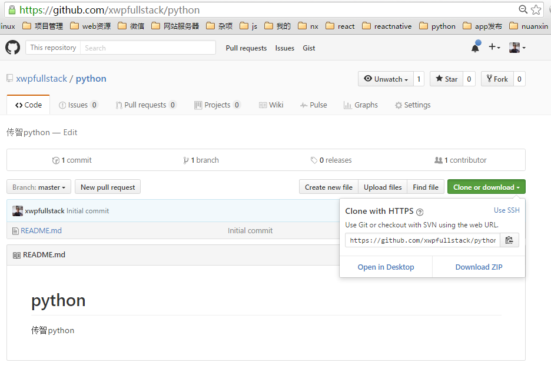
- clone项目
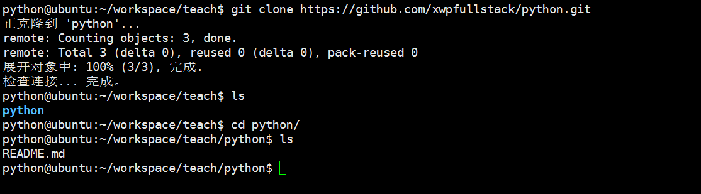
- 第一次使用需配置用户名和邮箱
$ git config --global user.name "xxx"
$ git config --global user.email "xxx@itcast.com"
- 完成第一次提交代码
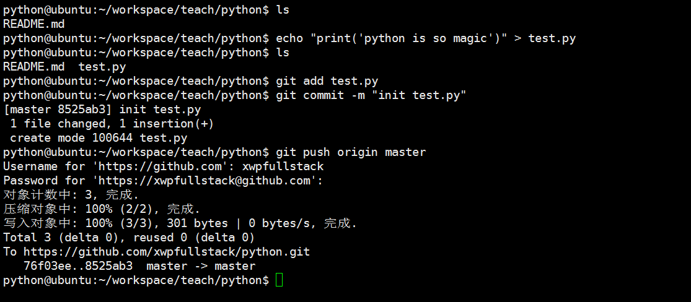
- 刷新查看github上的对应项目
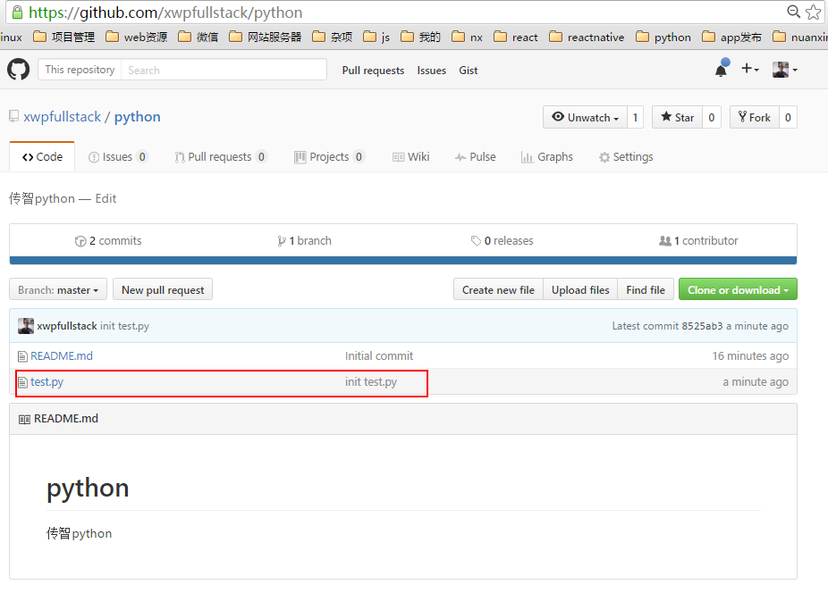
ssh配置
- 可以为项目配置身份秘钥，这样不必每次推送都输入账号和密码
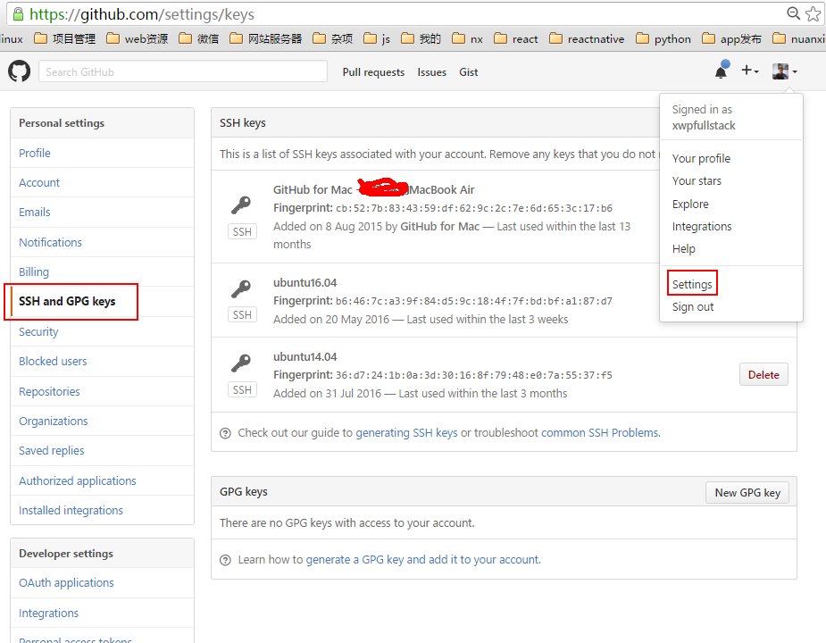
- ubuntu下生成当前电脑ssh秘钥
# 一路敲回车
$ ssh-keygen
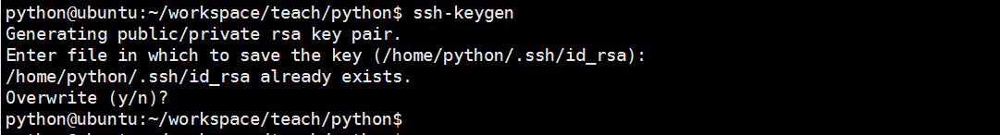
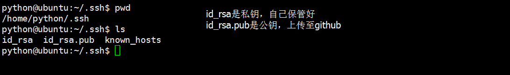
- 把公钥上传至github作为ssh keys
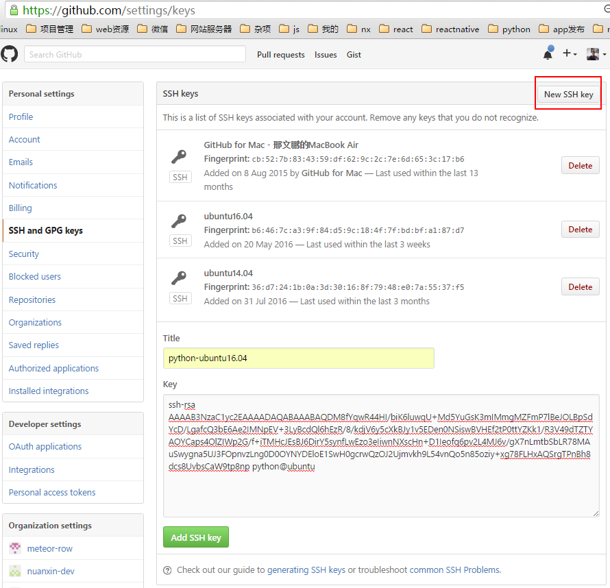
- 修改项目的配置文件为ssh方式,编辑项目里的.git/config文件
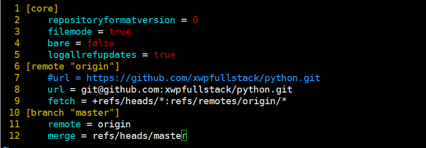
修改项目代码，再次提交，无须输入账号和密码
协作，添加可对项目进行
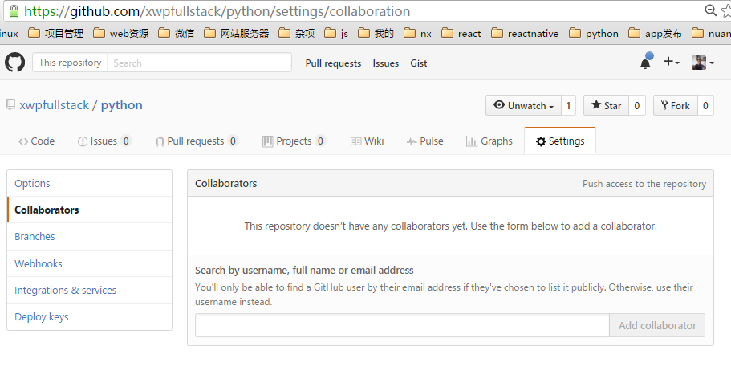
- 也可以建立一个team 把你的伙伴加到team 然后把项目放到team下
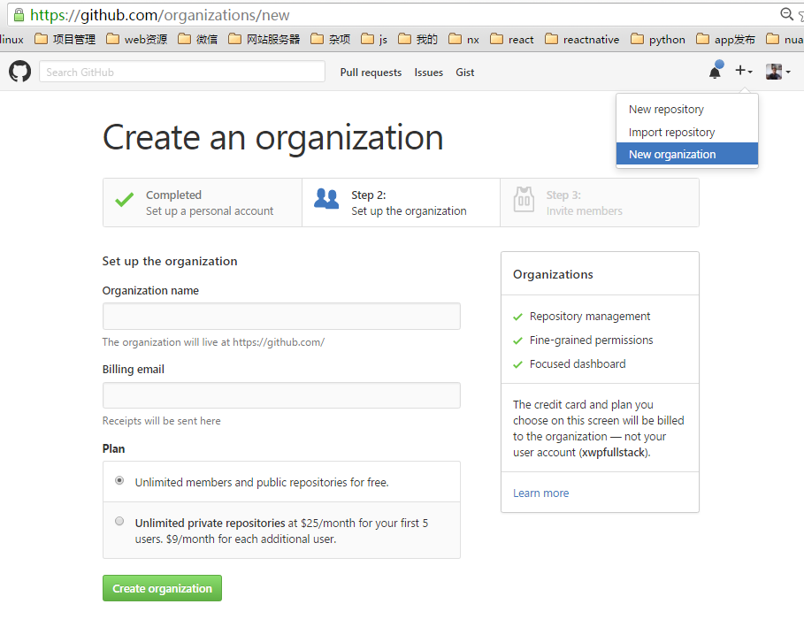
发现优秀项目
私有git服务器解决方案
- gitlab
- gitolite
分支设计
master、develop
场景
小明笨笨志强